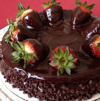
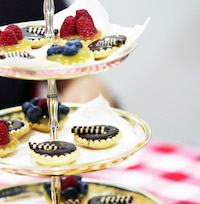

Our master pastry chefs can create any cake for your special occasions or just a sweet treat for any event or need. Just let us know what cake size, frosting type, filling choice and decorating idea and we can make any custom cake.
Select from a wide variety of cookies from chocolate chunk, peanut butter, s'mores, linzer and more. Always freshly-baked and can be shipped anywhere in the U.S.
Our delicious buttermilk scones make a great accompaniment to afternoon tea or a quick treat for breakfast with your coffee. The quick breads are made with the finest ingredients and are moist not dry and can be easily sliced or frozen for longer storage.
Sometimes you want something sweet that doesn't require baking or wish to bring a treat to a party without a lot of work. Chocolate covered strawberries are easy to make and look impressive on a dessert buffet. Flourless Chocolate Cake is elegant and easy to make with just a few ingredients you probably already have at home.
Proin elit arcu, rutrum commodo, vehicula tempus, commodo a, risus. Curabitur nec arcu. Donec sollicitudin mi sit amet mauris. Nam elementum quam ullamcorper ante. Etiam aliquet massa et lorem. Mauris dapibus lacus auctor risus. Aenean tempor ullamcorper leo. Vivamus sed magna quis ligula eleifend adipiscing. Duis orci. Aliquam sodales tortor vitae ipsum. Aliquam nulla. Duis aliquam molestie erat. Ut et mauris vel pede varius sollicitudin. Sed ut dolor nec orci tincidunt interdum. Phasellus ipsum. Nunc tristique tempus lectus.
Morbi tincidunt, dui sit amet facilisis feugiat, odio metus gravida ante, ut pharetra massa metus id nunc. Duis scelerisque molestie turpis. Sed fringilla, massa eget luctus malesuada, metus eros molestie lectus, ut tempus eros massa ut dolor. Aenean aliquet fringilla sem. Suspendisse sed ligula in ligula suscipit aliquam. Praesent in eros vestibulum mi adipiscing adipiscing. Morbi facilisis. Curabitur ornare consequat nunc. Aenean vel metus. Ut posuere viverra nulla. Aliquam erat volutpat. Pellentesque convallis. Maecenas feugiat, tellus pellentesque pretium posuere, felis lorem euismod felis, eu ornare leo nisi vel felis. Mauris consectetur tortor et purus.
Mauris eleifend est et turpis. Duis id erat. Suspendisse potenti. Aliquam vulputate, pede vel vehicula accumsan, mi neque rutrum erat, eu congue orci lorem eget lorem. Vestibulum non ante. Class aptent taciti sociosqu ad litora torquent per conubia nostra, per inceptos himenaeos. Fusce sodales. Quisque eu urna vel enim commodo pellentesque. Praesent eu risus hendrerit ligula tempus pretium. Curabitur lorem enim, pretium nec, feugiat nec, luctus a, lacus.
Duis cursus. Maecenas ligula eros, blandit nec, pharetra at, semper at, magna. Nullam ac lacus. Nulla facilisi. Praesent viverra justo vitae neque. Praesent blandit adipiscing velit. Suspendisse potenti. Donec mattis, pede vel pharetra blandit, magna ligula faucibus eros, id euismod lacus dolor eget odio. Nam scelerisque. Donec non libero sed nulla mattis commodo. Ut sagittis. Donec nisi lectus, feugiat porttitor, tempor ac, tempor vitae, pede. Aenean vehicula velit eu tellus interdum rutrum. Maecenas commodo. Pellentesque nec elit. Fusce in lacus. Vivamus a libero vitae lectus hendrerit hendrerit.
Select a Date: